Bayesian Deep Learning and Approximate Bayesian Computation for parameter inference
Bayesian_neural_networks_inference.Rmd
Introduction
Approximate Bayesian Computation (ABC) has emerged as a powerful framework for parameter inference in complex statistical models where likelihood functions are intractable. However, traditional ABC methods face significant computational challenges when dealing with high-dimensional summary statistics and complex parameter spaces. This vignette presents abcneuralnet, an R package that integrates Bayesian deep learning with ABC to address these challenges. We demonstrate four methodological approaches: Concrete Dropout (Gal et al. 2017), Monte Carlo Dropout (Gal and Ghahramani 2016), Deep Ensemble (Lakshminarayanan et al. 2016), and TabNet-ABC (Arik and Pfister 2020; Åkesson et al. 2022). Each method provides different strategies for uncertainty quantification and parameter inference, combining the representational power of deep neural networks with principled Bayesian inference. Through comprehensive examples, we illustrate the theoretical foundations, practical implementation, and performance characteristics of these methods for parameter inference in population genetics and related fields.
The challenge of parameter inference in complex population genetics models
Modern population genomics inference increasingly relies on complex stochastic models for which likelihood functions are either analytically intractable or computationally prohibitive to evaluate. This challenge is particularly acute in population genetics, evolutionary biology, and systems biology, where both coalescent and forward-time simulators can generate data under sophisticated models, but the corresponding likelihood functions remain intractable (Beaumont 2019).
Approximate Bayesian Computation (ABC) provides a likelihood-free framework for parameter inference in such settings. The fundamental principle of ABC relies on the intuition that simulated data sets with summary statistics close to those observed are likely to have been generated by similar parameter values. Formally, for observed data with summary statistics , ABC rejection sampling accepts parameters from prior if the distance for some tolerance threshold .
Limitations of traditional ABC approaches
Despite its theoretical simplicity and elegance, traditional ABC faces several practical challenges:
- Curse of dimensionality: The acceptance rate decreases exponentially with the number of summary statistics (Blum 2010)
- Distance metric selection: The choice of the distance function significantly impacts performance (Joyce and Marjoram 2008)
- Tolerance specification: Setting appropriate values involves trade-offs between accuracy and computational efficiency
- Computational efficiency: Rejection sampling can be highly inefficient, especially for complex posteriors. In addition, traditional ABC do no scale well for multiple observed samples.
Deep Learning as a solution
Recent advances in deep learning offer promising solutions to these challenges (Baragatti et al. 2024). Neural networks can learn complex mappings between high-dimensional summary statistics and parameter spaces, effectively learning an implicit likelihood or posterior approximation.
The abcneuralnet package implements four state-of-the-art Bayesian deep learning approaches:
- Concrete Dropout: Provides rigorous uncertainty quantification through approximate variational inference, specifically a refinement of “dropout as variational Bayesian approximation” where the dropout rate is learned during inference (Gal et al. 2017; Baragatti et al. 2024)
- Monte Carlo Dropout: A simpler “dropout” approach, which offers uncertainty estimation through stochastic forward passes, yet requiring careful tuning of the dropout rate hyper-parameter (Gal and Ghahramani 2016)
- Deep Ensemble: A highly efficient ensemble approach delivering robust predictions through model averaging (Lakshminarayanan et al. 2016)
- TabNet-ABC: Combines interpretable attention mechanisms with traditional ABC regression (Arik and Pfister 2020; Åkesson et al. 2022)
Each method addresses different aspects of the ABC inference problem, with their own advantages and limitations, while maintaining compatibility with existing ABC workflows and providing rigorous uncertainty quantification essential for scientific inference.
Throughout this tutorial, I will use the three core methods developed
in abcneuralnet, specifically Concrete
Dropout, Deep Ensemble and
Tabnet-ABC, to show how to perform end-to-end parameter
inference on simple toy models: initialize an abcnn object,
fit the neural network on simulated data, predict on test
pseudo-observed, predict parameters on observed samples, and finally
evaluate the performance of the trained neural network on both test and
observed data.
Computational Implementation
Architecture and Dependencies
The abcneuralnet package is built on the torch ecosystem for R (Falbel and Luraschi 2025), providing efficient tensor operations and automatic differentiation. The key architectural components include:
- R6 abcnn(): the core R6 class implementing all methods and functions in a single R object: fit, predict and plot results
-
Core Engine:
torch::nn_moduleimplementing different Bayesian neural network methods - Training Framework: Integration with luz for high-level training loop management []
-
Explainability and Interpretability methods:
cutting-edge explainability methods in
explainn()with the package innsight (Koenen and Wright 2024) - Calibrated Conformal Prediction: Calibrated Credible Intervals are obtained with Conformal Prediction as described in (Baragatti et al. 2024).
-
Model Persistence: Comprehensive serialization
through bundle and native torch save mechanisms with
save_abcnn()andload_abcnn()
If you are a beginner with torch in R and want to know
more about basic and more advanced usages, I recommend you to read the
book ‘Deep
Learning and Scientific Computing with R torch’ by Sigrid
Keydana.
Hardware
GPU Acceleration
The package automatically detects and utilizes CUDA-enabled GPUs through the luz backend. GPU acceleration provides speedups of 10-100x for training, particularly beneficial for:
- Large-scale ensemble training (5-10 networks) and deeper networks (high number of layers and neurons)
- High-dimensional summary statistics (>100 dimensions) and large-scale datasets (> training simulations)
- Extensive hyperparameter tuning
abcneuralnet uses the torch R package,
which is a very efficient implementation leveraging the Torch C++
library and providing codes and functions very similar to the
PyTorch framework. Neural networks are fitted with the
luz R package. If you are beginners with torch
in R and want to know more about it, I recommend you to read the book ‘Deep
Learning and Scientific Computing with R torch’ by Sigrid
Keydana.
Data analysis workflow
abcneuralent is designed to be user-friendly and streamline the data analysis workflow:
Initialize and
abcnnR6object with theabcnn$new()method, providing the training simulated dataset (the reference table, with simulated parameters and summary statistics). You also need to set the hyperparameters of the neural network at this step (e.g. number of layers, neurons, epochs, the learning rate), though you can change them at any time by accessingR6public slots.Fit the neural net with
abcnn$fit(). The luz engine is used to fit the model.Assess the quality of the fit, by visually assessing the training curve with
abcnn$plot_training().Estimate the cross-validation error with
abcnn$cross_validation(cross_validation_param, cross_validation_sumstats), wherecross_validation_paramandcross_validation_sumstatsare an unseen pseudo-observed dataset (i.e simulations) for which ground truth is known. The function returns a table with performance metrics. Once cross-validation has been computed, you can call it back without arguments (i.e.abcnn$cross_validation()) to get the metrics table, or plot the cross-validation scatter plot withabcnn$plot_cross_validation(). Alternatively, predict on test samples withabcnn$predict()to evaluate the posterior predictive performance with your custom method. If necessary, the test samples can be changed at this step withabcnn$predict(data = new_data), so that you can predict for different dataset with the same trained neural network.Assess the goodness-of-fit on test samples with the graphical outputs of
abcnn$plot_cross_validation(),abcnn$plot_prediction()andabcnn$plot_posterior().Predict on observed samples with
abcnn$predict(data = observed_data)and look at estimates withabcnn$plot_posterior()(figure) andabcnn$predictions()(table).Perform posterior predictive check. Draw parameters for
nrandom samples in the posterior distribution withabcnn$draw_from_posterior(n). Re-simulate summary statistics under your generative model with the parameters drawn from the posterior. Compare the fit of the distribution of your observed summary statistics with the distribution of re-simulated summary statistics given the posterior distributions.
Uncertainty quantification in statistical inference: epistemic vs. aleatoric
Understanding the sources of uncertainty is crucial for robust statistical inference and is the core objective of uncertainty quantification. Uncertainty can broadly be categorized into two types: epistemic and aleatoric. The epistemic uncertainty reflects our lack of knowledge and how well/bad the model performs for predictions. It’s reducible – meaning it shrinks as we gather more data or refine our models. In the case of ABC, it stems from factors like sparse data, complex relationships between summary statistics and parameters, or poorly defined prior assumptions. Essentially, it’s the uncertainty about the true posterior distribution. On the other hand, aleatoric uncertainty represents inherent randomness, i.e. noise, within the data itself. It’s irreducible. It’s a fundamental property of the system and cannot be reduced by collecting more data. In population genomics, examples include stochastic genetic drift, rare variants, or sequencing/genotyping errors. It is the uncertainty in the data itself. In the figure, both epistemic and aleatoric uncertainties are represented over the underlying data, estimated with either Concrete Dropout or Deep Ensemble. The epistemic uncertainty is globally narrow, but increases sharply in regions that have not been seen during training (-2 < x < 2), indicating a lower confidence when the model doesn’t know (i.e. prediction out of the training distribution). On the other hand, aleatoric uncertainty within and close to the region where the data is noisy, reflecting the prediction uncertainty due to the inherent noise in the data. Crucially, both types of uncertainty must be accounted for when doing statistical inference. Ignoring either can lead to flawed conclusions. Combining both types of uncertainty helps us quantify the predictive uncertainty — the model’s confidence — taking into account noise it can explain and noise it cannot. It allows for more realistic and reliable estimates of credible intervals, and facilitates informed model checking and interpretation.
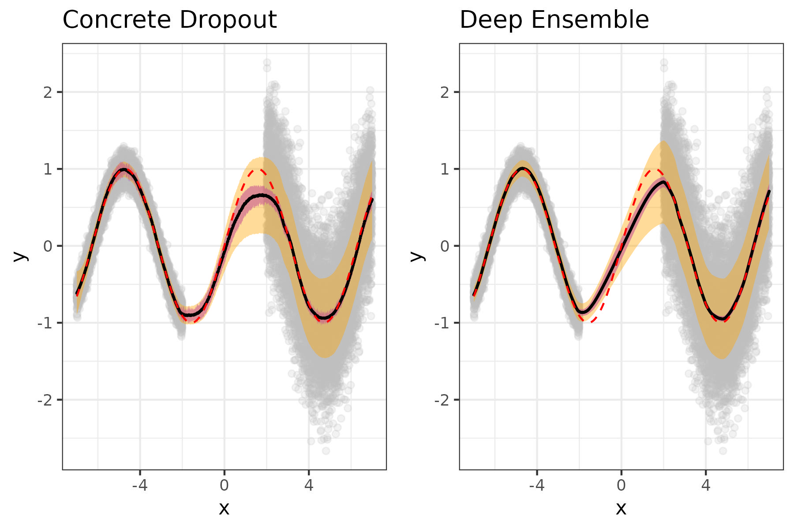
Case study 1: Linear Regression with uncertainty quantification
Problem setup
We begin with a simple linear regression problem to demonstrate fundamental concepts:
where , , and . This controlled setting allows us to validate uncertainty quantification against analytical solutions.
Data generation
I simulated 2,000 training samples and 1,000 test samples with a simple linear function. There is only one parameter to estimate, and one input variable.
Fit a model with Concrete Dropout
I used a Concrete Dropout regression model described in (Gal et al. 2017) and applied conformal prediction as in (Baragatti et al. 2024). You can read an interesting discussion on the Concrete Dropout model on this blog post for more details.
I initialized the abcnn object with the training samples
theta (parameters of the simulations),
sumstats (the summary statistics) and observed
(the summary statistics of the test samples, also simulated). For this
simple toy model, I do not have true observed data to predict at the
end. I implemented a three-layer network with 256 hidden units per
layer:
# Init an abcnn object with inputs and targets
abc = abcnn$new(theta,
sumstats,
observed,
method = 'concrete dropout',
scale_input = "none",
scale_target = "none",
num_hidden_layers = 3,
num_hidden_dim = 128,
epochs = 20,
batch_size = 32,
l2_weight_decay = 1e-5,
learning_rate = 0.001,
seed = 6295)You can have a summary of your abcnn object at any time
with abcnn$summary().
abc$summary()
#> ===================================================
#> ABC Neural Net. Bayesian Deep learning and ABC.
#> ===================================================
#> ABC parameter inference with the method: concrete dropout
#>
#>
#> |Sample | Size|
#> |:----------------|------:|
#> |Training | 1800.0|
#> |Testing split | 0.1|
#> |Testing | 180.0|
#> |Evaluation split | 0.1|
#> |Evaluation | 200.0|
#> |Conformal | 1000.0|
#> |Observed | 1000.0|
#>
#> Is CUDA available? [1] FALSE
#>
#> Device is: torch_device(type='cpu')
#>
#> Call: initialize(theta = ..1, sumstat = ..2, observed = ..3, method = "concrete dropout",
#> scale_input = "none", scale_target = "none", num_hidden_layers = 3,
#> num_hidden_dim = 128, batch_size = 32, epochs = 20, learning_rate = 0.001,
#> l2_weight_decay = 1e-05, seed = 6295)| Hyperparameter | Value |
|---|---|
| Method | concrete dropout |
| Scaling for inputs (summary statistics) | none |
| Scaling for targets (theta) | none |
| Number hidden layers | 3 |
| Number hidden dimensions | 128 |
| Batch size | 32 |
| Epochs | 20 |
| Early stopping callback | FALSE |
| Patience for early stopping | 4 |
| Learning rate | 0.001 |
| L2 weight decay | 1e-05 |
| Method for ABC | loclinear |
| Tolerance rate (ABC) | 0.1 |
| Number of posterior samples (mc dropout and concrete dropout) | 1000 |
| Dropout rate | 0.5 |
| Number of networks (deep ensemble) | 5 |
Model training and performance
# Use the fit() method to train the neural network
abc$fit()The abcnn object is a R6Class object,
providing a modern Object-Oriented Programming (OOP) approach. All the
settings and data of an abcnn object can be accessed in
public slots. For example, the torch model can be accessed
with abcnn$fitted$model, and the luz fitted
model can be accessed with abcnn$fitted. It means that
abcnn objects allows very flexible approaches, where you
can plot and visualize data and outputs, and define new functions
easily. For example, I could wish to plot the evolution of the loss
value at each iteration (epoch) during the training. This is the regular
training curve used to assess training quality in every deep learning
model.
The abcnn object is an R6 class that uses a modern
object‑oriented design in R. All its settings and data are stored in
public fields that you can access directly. For instance, the underlying
torch model is in abcnn$fitted$model, and the
luz fitted model is in abcnn$fitted. This
structure makes abcnn objects very flexible, so you can
easily visualize data and outputs or write new helper functions, such as
plotting the loss value at each training epoch to inspect the training
curve of the deep learning model.
# The torch model
# abc$fitted$model
# The luz fitted model
abc$fitted
#> A `luz_module_fitted`
#> ── Time ────────────────────────────────────────────────────────────────────────
#> • Total time: 12.1s
#> • Avg time per training epoch: 487ms
#>
#> ── Results ─────────────────────────────────────────────────────────────────────
#> Metrics observed in the last epoch.
#>
#> ℹ Training:
#> loss: 51.0977
#>
#> ── Model ───────────────────────────────────────────────────────────────────────
#> An `nn_module` containing 33,543 parameters.
#>
#> ── Modules ─────────────────────────────────────────────────────────────────────
#> • concrete_dropout: <nn_sequential> #33,283 parameters
#> • linear_mu: <nn_linear> #129 parameters
#> • linear_logvar: <nn_linear> #129 parameters
#> • conc_drop_mu: <nn_concrete_dropout> #1 parameters
#> • conc_drop_logvar: <nn_concrete_dropout> #1 parameters
# The number of dimensions (i.e. neurons) and layers
abc$num_hidden_dim
#> [1] 128
abc$num_hidden_layers
#> [1] 3Plotting the training curve is a really common procedure for fitting neural network. It gives you a lot of information on the quality of the training, especially to assess over- and under-fitting of the network. Read more about the bias-variance tradeoff. Training a neural network usually involves a trial-error process with iterative hyperparameter tuning until a good performance is achieved, with a good balance between over- and under-fitting.
Plot the training curve of the deep learning model to check model fit:
abc$plot_training()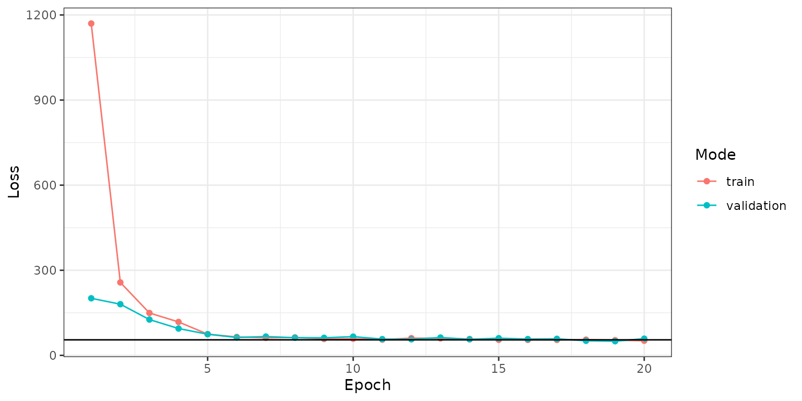
The training curve of the neural network across 30 epochs, computed on training data split in three partitions: training, validation (also called testing) and evaluation. Training and validation are computed at the end of each epoch. The black horizontal line is the loss computed on the evaluation dataset at the end of the training procedure.
Note that sometimes the heteroscedastic loss value can be negative with the Concrete Dropout method. It can be confusing as MSE losses are always positive. However, negative concrete dropout losses do not impact the training procedure.
You can save the abccn object with the fitted model and
predictions.
save_abcnn(abc, prefix = "../path/abc_concrete")
abc = load_abcnn(prefix = "../path/abc_concrete")Cross-validation
Re-use the generative model to generate a new dataset of unseen simulations with ground truth:
Compute the cross-validation error metrics:
abc$cross_validation(theta_crossval,
sumstats_crossval)Print the already computed cross-validation error metrics:
abc$cross_validation()
#> # A tibble: 1 × 10
#> parameter n mae mse rmse nmae cor cov mean_epistemic_interval
#> <chr> <int> <dbl> <dbl> <dbl> <dbl> <dbl> <dbl> <dbl>
#> 1 y1 1000 0.843 1.11 1.05 7.05 0.882 3.84 4.72
#> # ℹ 1 more variable: mean_overall_interval <dbl>Plot the cross-validation scatter plot (predicted ~ ground truth) with Conformal Credible Intervals:
abc$plot_cross_validation()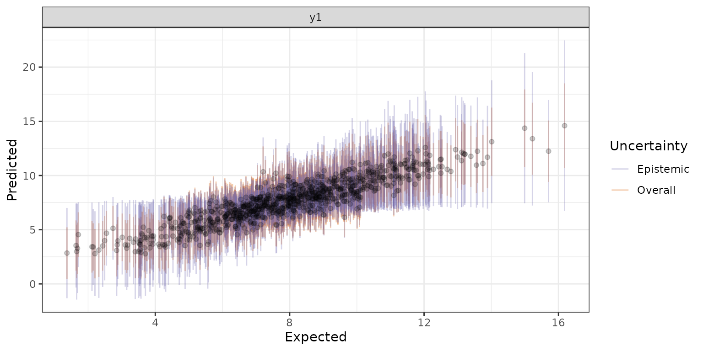
Estimates and uncertainty with the Concrete Dropout method
After the model is efficiently trained and the training quality has
been assessed, parameter estimates can be predicted with
abc$predict(). I predicted parameters for 1,000 simulated
samples (summary statistics):
abc$predict()You can get predictions with their associated uncertainties and Conformal Credibility Intervals as a tidy data frame:
head(abc$predictions())
#> Back-transform scaled parameters with method: none
#> sample parameter predictive_mean epistemic_uncertainty aleatoric_uncertainty
#> 1 1 y1 10.309218 1.0675313 1.283543
#> 2 2 y1 7.451776 0.5612965 1.340128
#> 3 3 y1 6.436447 0.6559056 1.215488
#> 4 4 y1 10.219753 1.1048015 1.289174
#> 5 5 y1 4.910246 0.9696648 1.091763
#> 6 6 y1 9.790845 0.9883168 1.296825
#> overall_uncertainty epistemic_conformal_credible_interval
#> 1 2.351074 3.103068
#> 2 1.901425 1.631560
#> 3 1.871393 1.906567
#> 4 2.393975 3.211404
#> 5 2.061428 2.818593
#> 6 2.285142 2.872810
#> overall_conformal_credible_interval posterior_median posterior_lower_ci
#> 1 2.342507 10.385820 7.560987
#> 2 1.894496 7.469801 6.283964
#> 3 1.864574 6.371157 5.279931
#> 4 2.385252 10.391239 7.434653
#> 5 2.053916 4.697867 3.732350
#> 6 2.276815 9.918343 7.429564
#> posterior_upper_ci
#> 1 11.994395
#> 2 8.480160
#> 3 8.033218
#> 4 11.961211
#> 5 7.971181
#> 6 11.352325The trained model provides separate estimates of aleatoric and epistemic uncertainty:
#> Back-transform scaled parameters with method: none
ggplot(data = df_training[1:1000,], aes(x = x, y = y)) +
geom_point(color = "blue", alpha = 0.3) +
# geom_point(data = df_predicted, aes(x = x, y = y_true), color = "green", alpha = 0.3) +
geom_line(data = df_predicted, aes(x = x, y = predictive_mean), color = "Red") +
geom_point(data = df_predicted, aes(x = x, y = predictive_mean), color = "Red") +
facet_wrap(~ parameter, scales = "free") +
geom_ribbon(data = df_predicted, aes(x = x, y = predictive_mean, ymin = ci_conformal_e_upper, ymax = ci_conformal_e_lower), alpha = 0.4, fill = "purple") +
geom_ribbon(data = df_predicted, aes(x = x, y = predictive_mean, ymin = ci_conformal_upper, ymax = ci_conformal_lower), alpha = 0.3, fill = "green") +
theme_bw()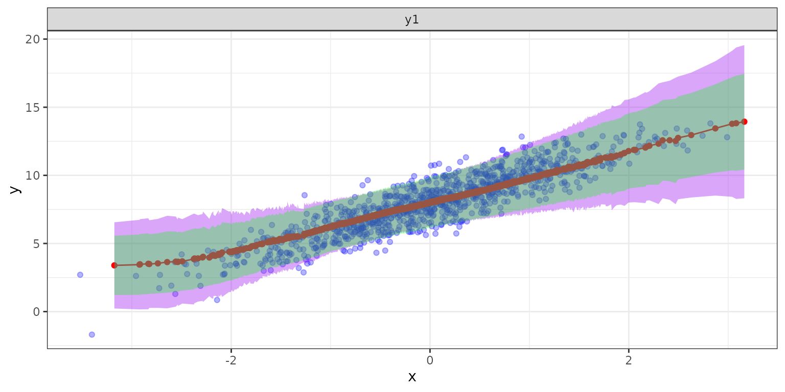
Predictions as a function of simulated parameter. The purple ribbon is the Conformal Credible Interval based on the epistemic unvertainty alone. The green ribbon is the Conformal Credible Interval based on the overall unvertainty.
There are different Credible Intervals and uncertainty measures provided. I recommend to use the overall Conformal Credible Interval in practice, which is estimated with Conformal Prediction and using the overall (aleatoric + epistemic) uncertainty as a proxy of the variance (see Baragatti et al 2024 for details on the method). The overall Conformal Credible Interval has a smoothing effect and fits really well the expected C.I. in benchmarks (Brazier, unpublished). If the neural network learned well from the data, both epistemic and overall Conformal Credible Intervals should converged. Yet the epistemic Conformal Credible Interval has an interesting property. It increases more than the overall C.I. in regions where the data has not been seen by the network during the training or where the predictive power is lower than the rest of the dataset, yielding more conservative C.I. in these regions, and giving a useful information for interpreting the model’s outputs (see Figure above, especially compare the purple and green C.I.). To validate the fit of the network, it is interesting to look directly to the epistemic and aleatoric uncertainties estimated by Concrete Dropout (see Figure below). Concrete Dropout and Deep Ensemble jointly estimate the mean and the variance of each data point. The uncertainty is the square root of the variance estimated (i.e., standard deviation).
ggplot(data = df_training[1:1000,], aes(x = x, y = y)) +
geom_point(color = "grey", alpha = 0.3) +
# geom_point(data = df_predicted, aes(x = x, y = y_true), color = "green", alpha = 0.3) +
geom_line(data = df_predicted, aes(x = x, y = predictive_mean), color = "Red") +
geom_point(data = df_predicted, aes(x = x, y = predictive_mean), color = "Red") +
facet_wrap(~ parameter, scales = "free") +
geom_ribbon(data = df_predicted, aes(x = x, y = predictive_mean, ymin = uncertainty_a_lower, ymax = uncertainty_a_upper), alpha = 0.3, fill = "blue") +
geom_ribbon(data = df_predicted, aes(x = x, y = predictive_mean, ymin = uncertainty_e_lower, ymax = uncertainty_e_upper), alpha = 0.3, fill = "red") +
theme_bw()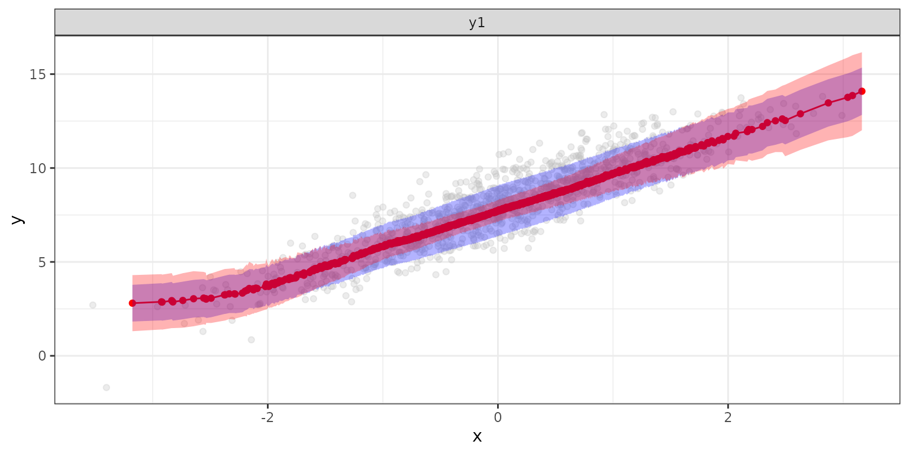
Predictions as a function of simulated parameters. The epistemic uncertainty (red) and aleatoric uncertainty (blue) were estimated with Concrete Dropout (Gal et 2017).
The aleatoric uncertainty is constant across the dataset, as the variance in the data is homogeneous (i.e. homoscedasticity), while the epistemic uncertainty, reflecting model’s uncertainty, decreases at the iddle of the distribution, where the model’s predictive performance is better.
The raw uncertainty estimated with Concrete Dropout:
abc$plot_prediction(uncertainty_type = "uncertainty")
#> Back-transform scaled parameters with method: none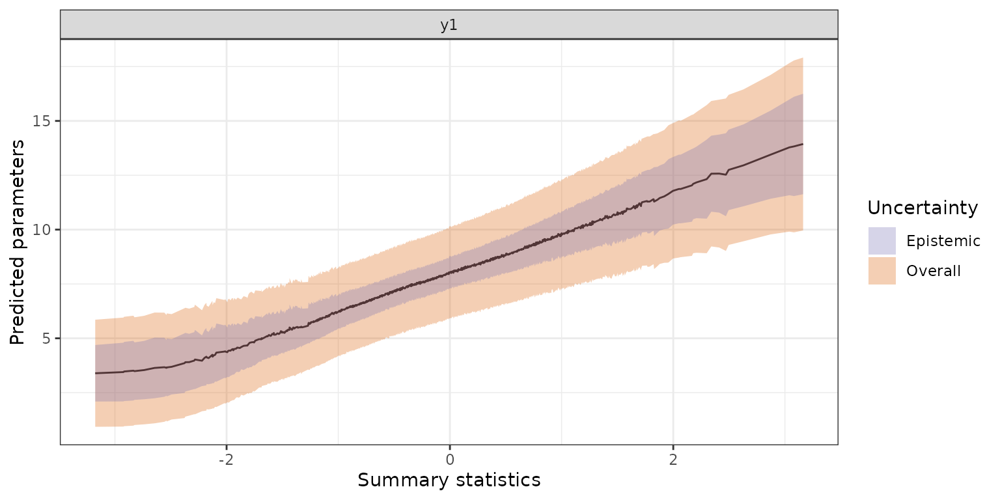
Prediction results with uncertainty quantification. Red line shows mean predictions, blue ribbon indicates aleatoric uncertainty, and red ribbon shows epistemic uncertainty.
The epistemic uncertainty increases at the edges of the distribution of the training dataset.
The Conformal Credible intervals provide calibrated uncertainty estimates with guaranteed coverage properties (Baragatti et al. 2024):
abc$plot_prediction(uncertainty_type = "conformal")
#> Back-transform scaled parameters with method: none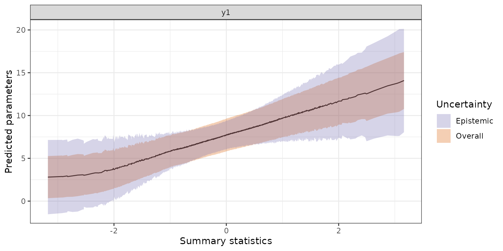
Conformal credible intervals (green) compared to epistemic uncertainty intervals (purple). Conformal intervals provide calibrated coverage guarantees.
The epistemic Conformal Credible Intervals, based on the epistemic uncertainty as a proxy of uncertainty, are very sensitive to variance in uncertainty, and increases shaprly at the edges of the data distribution. It is a good choice if you are interested in very conservative C.I. and want to assess the sensitivity to over-fitting.
On the contrary, the overall Conformal Credible Intervals, based on both the aleatoric and epistemic uncertainties a proxy of the whole uncertainty, is smoother and less impacted by local variance in epistemic uncertainty. It is a good choice if you are searching for a reliable and well-calibrated C.I.
Interestingly, the epistemic uncertainty increases in regions where the cross-validation plot shows higher error rates (compare the plots above and below):
abc$plot_cross_validation()
If you have the same number of input and output parameters (e.g., x1
and x2 as input, y1 and y2 as output), then the default representation
in abc$plot_prediction() will naturally represent linear
regressions (as many subplots as output parameters). Otherwise
predictions are simply represented side by side and the X axis is
meaningless (the plot_type = "errorbar" option offers a
better representation).
abc$plot_prediction(uncertainty_type = "uncertainty", plot_type = "errorbar")
#> Back-transform scaled parameters with method: none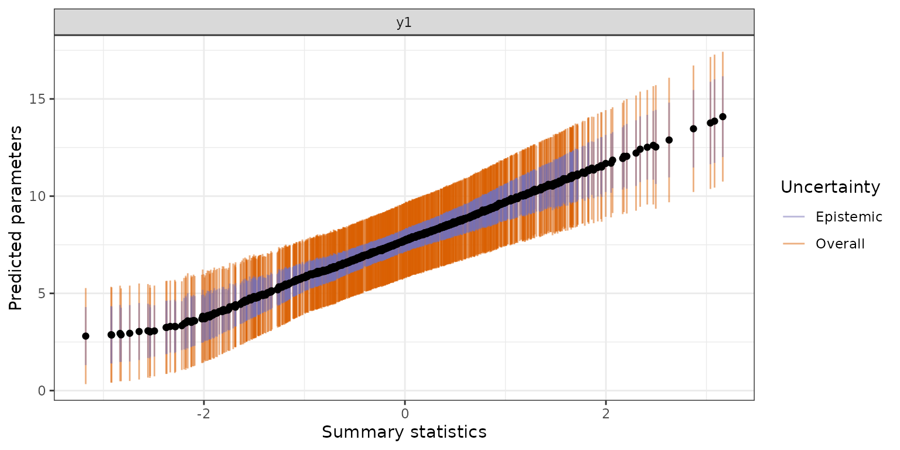
Plotting posteriors for individual observations
For specific observations, we can examine the approximate posterior distribution:
abc$plot_posterior(sample = 700, prior = TRUE, uncertainty_type = "uncertainty") +
geom_vline(xintercept = Y_obs[700], color = "red", size = 1.5)
#> Back-transform scaled parameters with method: none
#> Back-transform scaled posteriors with method: none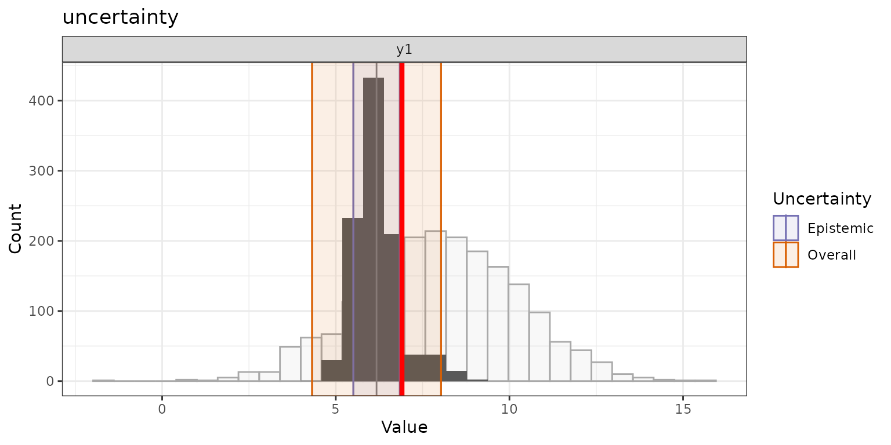
Y_obs[700]
#> [1] 6.906046
abc$predictive_mean$y1[700]
#> [1] 6.173774
abc$plot_posterior(sample = 501, prior = TRUE, uncertainty_type = "conformal") +
geom_vline(xintercept = Y_obs[501], color = "red", size = 1.5)
#> Back-transform scaled parameters with method: none
#> Back-transform scaled posteriors with method: none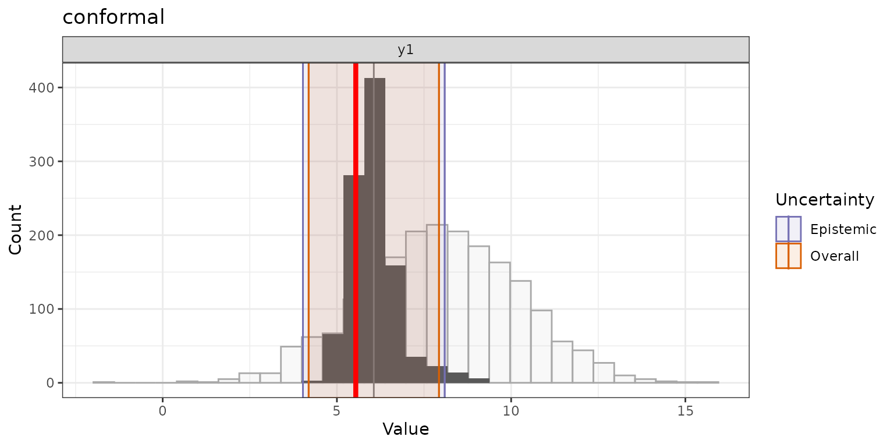
Distribution of approximate posterior estimates with predictive means and credible intervals. The prior distribution is plotted underneath (white bars) to compare priors and posteriors.
Y_obs[501]
#> [1] 5.541102
abc$predictive_mean$y1[501]
#> [1] 6.058429Case study 2: Nonlinear multivariate regression with Deep Ensemble
A complex function combining sinus and cosinus functions
To demonstrate the capabilities of Deep Ensemble methods, we consider a challenging nonlinear function with two output parameters:
where represent heteroscedastic noise with varying magnitude across different regions of the input space.
Data Generation with Missing Regions
We simulate two parameters and two summary statistics, with missing data (gaps) and different amounts of random noise in the two parts of the dataset:
# Parameters of simulated input x
data_range = 7
data_step = 0.0005
# Boundaries of the gap in the data range
bound1 = -2
bound2 = 2
# Random noise applied on y
data_sigma1a = 0.1
data_sigma2a = 0.5
data_sigma1b = 0.2
data_sigma2b = 0.1
# Number of simulated data points
# num_data = 10000
# Simulate x1
data_x1a = seq(-data_range, bound1 + data_step, by = data_step)
data_x1b = seq(bound2, data_range + data_step, by = data_step)
# Simulate targets y
data_y1a = sin(data_x1a) + rnorm(length(data_x1a), 0, data_sigma1a)
data_y1b = sin(data_x1b) + rnorm(length(data_x1b), 0, data_sigma2a)
# Shift X1 to get X2
data_x2a = data_x1a + 7
data_x2b = data_x1b + 7
# Simulate targets y
data_y2a = cos(data_x2a) + rnorm(length(data_x2a), 0, data_sigma1b)
data_y2b = cos(data_x2b) + rnorm(length(data_x2b), 0, data_sigma2b)
df = data.frame(x1 = c(data_x1a, data_x1b),
x2 = c(data_x2a, data_x2b),
y1 = c(data_y1a, data_y1b),
y2 = c(data_y2a, data_y2b))
# Shuffle data
shuffle_idx = sample(1:(nrow(df)), nrow(df), replace = FALSE)
df_train = df[shuffle_idx,]
# Train/Test datasets
# test_ratio = 0.1
# num_train_data = round(nrow(df) * (1 - test_ratio), digits = 0)
# num_test_data = nrow(df) - num_train_data
#
# train_x = df[1:num_train_data, c("x1", "x2")]
# train_y = df[1:num_train_data, c("y1", "y2")]
# test_x = df[num_train_data:nrow(df_train), c("x1", "x2")]
# test_y = df[num_train_data:nrow(df_train), c("y1", "y2")]
train_x = df_train[, c("x1", "x2")]
train_y = df_train[, c("y1", "y2")]
# Make a pseudo-obseerved dataset with out of distribution data points
# Simulate x1
data_x1 = seq(-data_range, data_range, length.out = 1000)
# Simulate true targets y
data_y1 = sin(data_x1)
# Shift X1 to get X2
data_x2 = data_x1 + 7
# Simulate targets y
data_y2 = cos(data_x2)
df_observed = data.frame(x1 = data_x1,
x2 = data_x2,
y1 = data_y1,
y2 = data_y2)
observed_x = df_observed[, c("x1", "x2")]
observed_y = df_observed[, c("y1", "y2")]
df_deepensemble = list(df_train = df_train,
df_observed = df_observed)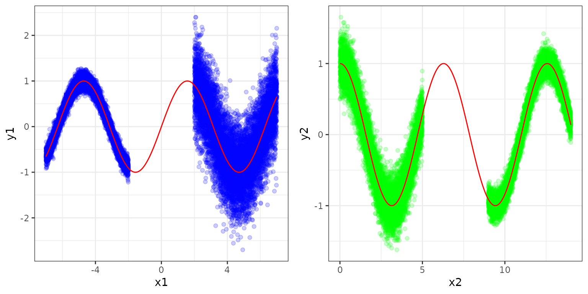
Deep Ensemble Training
Deep Ensemble trains multiple networks with different random initialization and random batches (adversarial training not implemented yet) (Lakshminarayanan et al. 2016):
# devtools::load_all()
# Predict Y when X is observed
theta = train_y
sumstats = train_x
observed = observed_x
true_param = observed_y
abc_ensemble = abcnn$new(theta,
sumstats,
observed,
method = 'deep ensemble',
num_networks = 5,
scale_input = "minmax",
scale_target = "none",
epochs = 20,
num_hidden_layers = 3,
num_hidden_dim = 512,
batch_size = 128,
seed = 4722)
abc_ensemble$fit()Checking the model training:
abc_ensemble$plot_training()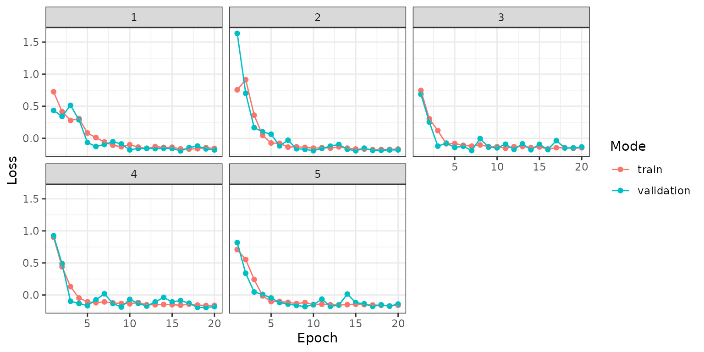
Variation in Uncertainty Quantification across different regions
abc_ensemble$predict()Deep Ensembles provide particularly insightful uncertainty estimates across different data regions:
abc_ensemble$plot_prediction(uncertainty_type = "uncertainty")
#> Back-transform scaled parameters with method: none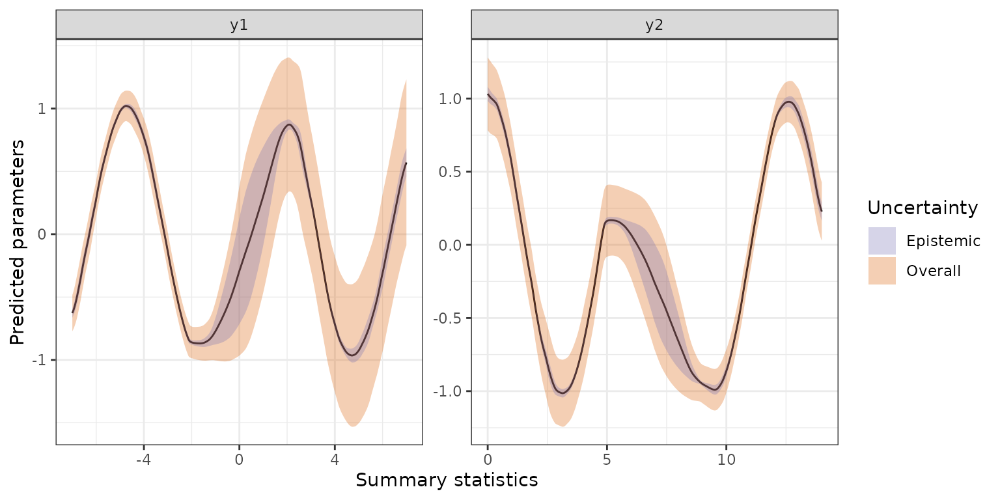
abc_ensemble$plot_prediction(uncertainty_type = "conformal")
#> Back-transform scaled parameters with method: none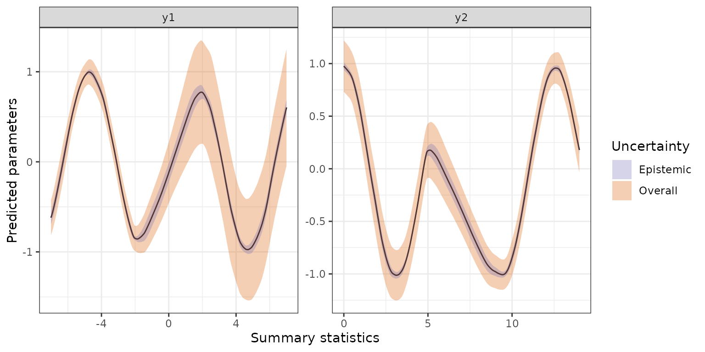
The uncertainty, especially epistemic uncertainty, increases in unseen regions during training. In addition, the aleatoric uncertainty increases in regions with higher variance (i.e. noise) in data:
# Print a sample with -5 < x1 < -4 (within the distribution with a low noise)
# which(abc$observed < -4 & abc$observed > -5)
abc_ensemble$plot_posterior(sample = 155, prior = TRUE)
#> Back-transform scaled parameters with method: none
# Print a sample with 4 < x1 < 5 (within the distribution with a high noise)
# which(abc$observed < 5 & abc$observed > 4)
abc_ensemble$plot_posterior(sample = 800, prior = TRUE)
#> Back-transform scaled parameters with method: none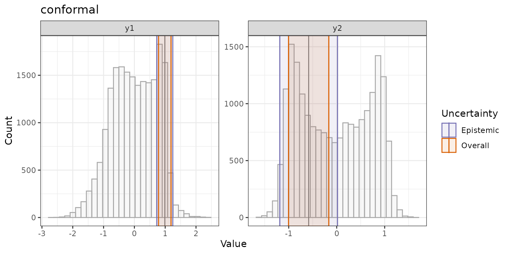
# Print a sample with -1 < x1 < 1 (out of training distribution)
# which(abc$observed < 1 & abc$observed > -1)
abc_ensemble$plot_posterior(sample = 520, prior = TRUE)
#> Back-transform scaled parameters with method: none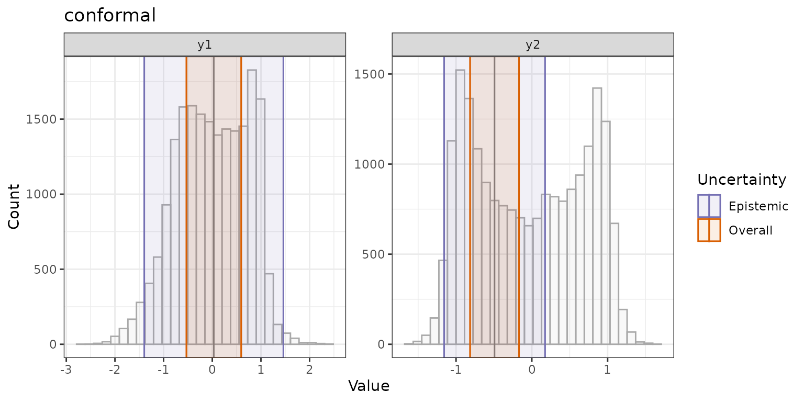
Case Study 3: Model Interpretability and Feature Importance in a high-dimensional dataset
Gaussian Toy Model
We demonstrate this approach on a homoscedastic normal model, where denotes an inverse Gamma distribution with shape parameter and scale parameter :
It is straightforward to derive the exact values of , , , and posterior quantiles for the two parameters from the above expressions and for a given sample y (see (Raynal et al. 2019) for details on the method).
In addition we add 50 noisy random summary statistics simulated according to a uniform(0,1) distribution to see how the model can handle noise in high dimensional dataset. Hence there are a total of 61 summary statistics, and only 11 of these are informative.
# For training
sumstats.train = as.data.frame(dataset$x.train)
theta.train = as.data.frame(dataset$y.train)
# Testing
sumstats.test = dataset$x.test
theta.test = dataset$y.test
# The exact value to find
theta.exact = dataset$y.exact
ggplot(theta.train, aes(x = theta1, y = theta2)) +
geom_point() +
geom_point(data = theta.test, aes(x = theta1, y = theta2), color = "red", alpha = 0.5)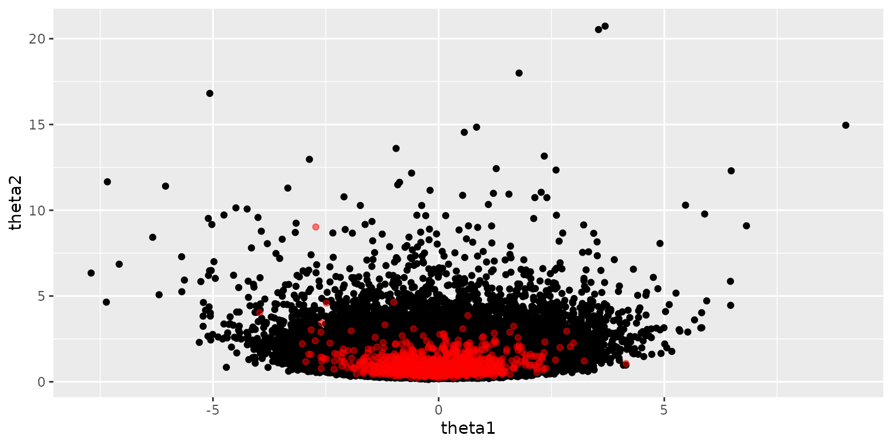
Training a Deep Ensemble model
deepensemble_highdim = abcnn$new(theta.train,
sumstats.train,
sumstats.test[1:1000,],
method = 'deep ensemble',
scale_input = "minmax",
scale_target = "minmax",
num_hidden_layers = 3,
num_hidden_dim = 256,
epochs = 20,
batch_size = 64,
l2_weight_decay = 1e-4,
seed = 42)
deepensemble_highdim$summary()
#> ===================================================
#> ABC Neural Net. Bayesian Deep learning and ABC.
#> ===================================================
#> ABC parameter inference with the method: deep ensemble
#>
#>
#> |Sample | Size|
#> |:----------------|-------:|
#> |Training | 18000.0|
#> |Testing split | 0.1|
#> |Testing | 1800.0|
#> |Evaluation split | 0.1|
#> |Evaluation | 2000.0|
#> |Conformal | 1000.0|
#> |Observed | 1000.0|
#>
#> Is CUDA available? [1] FALSE
#>
#> Device is: torch_device(type='cpu')
#>
#> Call: initialize(theta = ..1, sumstat = ..2, observed = ..3, method = "deep ensemble",
#> scale_input = "minmax", scale_target = "minmax", num_hidden_layers = 3,
#> num_hidden_dim = 256, batch_size = 64, epochs = 20, l2_weight_decay = 1e-04,
#> seed = 42)| Hyperparameter | Value |
|---|---|
| Method | deep ensemble |
| Scaling for inputs (summary statistics) | minmax |
| Scaling for targets (theta) | minmax |
| Number hidden layers | 3 |
| Number hidden dimensions | 256 |
| Batch size | 64 |
| Epochs | 20 |
| Early stopping callback | FALSE |
| Patience for early stopping | 4 |
| Learning rate | 0.001 |
| L2 weight decay | 1e-05 |
| Method for ABC | loclinear |
| Tolerance rate (ABC) | 0.1 |
| Number of posterior samples (mc dropout and concrete dropout) | 1000 |
| Dropout rate | 0.5 |
| Number of networks (deep ensemble) | 5 |
deepensemble_highdim$fit()
deepensemble_highdim$plot_training()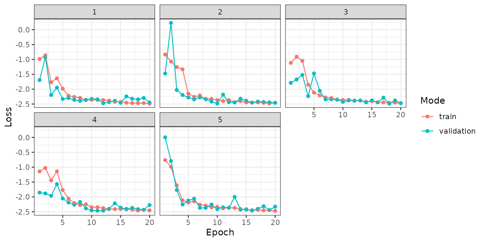
Model Interpretability and Feature Importance
Understanding which summary statistics drive parameter estimates is crucial for scientific interpretation. The explainn class implements a suite of methods to provide interpretable feature attributions.
The explainn() class and methods for model
explanation
The https://bips-hb.github.io/innsight/ package backend provides twelve different explainability methods to interpret feature importance within an explainn object. Both local and global methods are provided, to interpret feature importance for a focal prediction (a single output/sample) or summarize importances across a whole dataset (multiple samples).
DeepLift (deep learning important features) is an algorithm introduced by Shrikumar et al. (2017). It’s a local method for interpreting a single element output prediction , given a reference , returning the contribution of each input feature from the difference of the output and the reference output prediction.
exp = explainn$new(deepensemble_highdim)
exp$run(data = sumstats.test[1:1000,],
method = "deeplift")
exp$plot()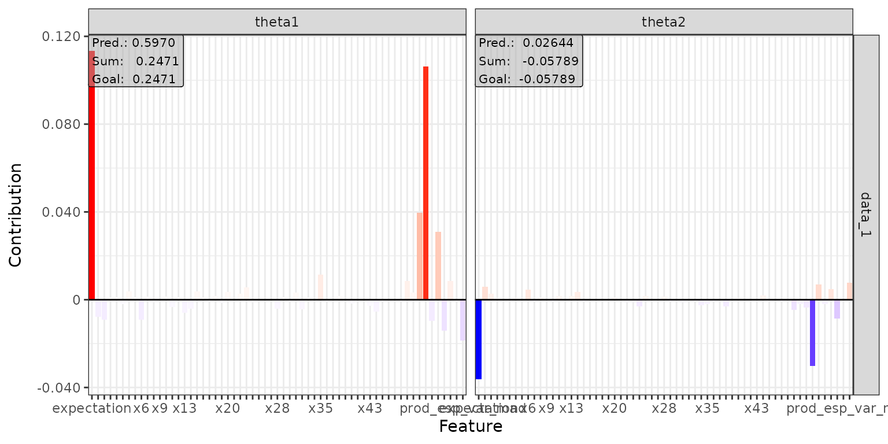
Feature importance visualization using DeepLIFT attribution methods, for the first sample output prediction. Colors indicate the contribution of each feature to the final prediction.
Even if DeepLift is a local method, multiple samples can be passed and importance scores summarizzed across all samples’ predictions.
exp$plot_global()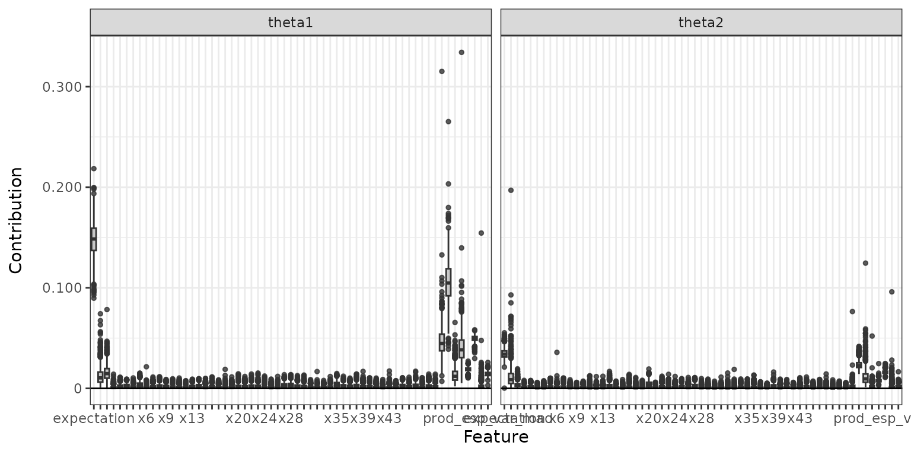
Feature importance visualization using DeepLIFT attribution methods, summarized across the 1,000 smaples. Colors indicate the contribution of each feature to the final prediction.
The individual contributions of input variables to the subject prediction:
# Three dimension outpout:
# - First sample
# - 10 first summary statistics
# - the two output parameters
exp$get_result()[1,1:10,1:2]
#> theta1 theta2
#> expectation 0.1581784040 -0.0293746460
#> variance -0.0067209438 0.0051860819
#> mad -0.0113320518 0.0022572633
#> x1 -0.0002234270 -0.0007863209
#> x2 -0.0014728967 0.0008869882
#> x3 -0.0044262144 -0.0004459003
#> x4 -0.0021220690 -0.0012857376
#> x5 -0.0008280979 -0.0002281855
#> x6 -0.0034867853 0.0039487351
#> x7 -0.0011872391 0.0017892555SmoothGrad is another method, which can also be interpreted as local and global feature importance scores. SmoothGrad was introduced by D. Smilkov et al. (2017) and is an extension to the classical Vanilla Gradient method (see SmoothGrad for more details).
exp = explainn$new(deepensemble_highdim)
exp$run(data = sumstats.test[1:1000,],
method = "smoothgrad")
exp$plot()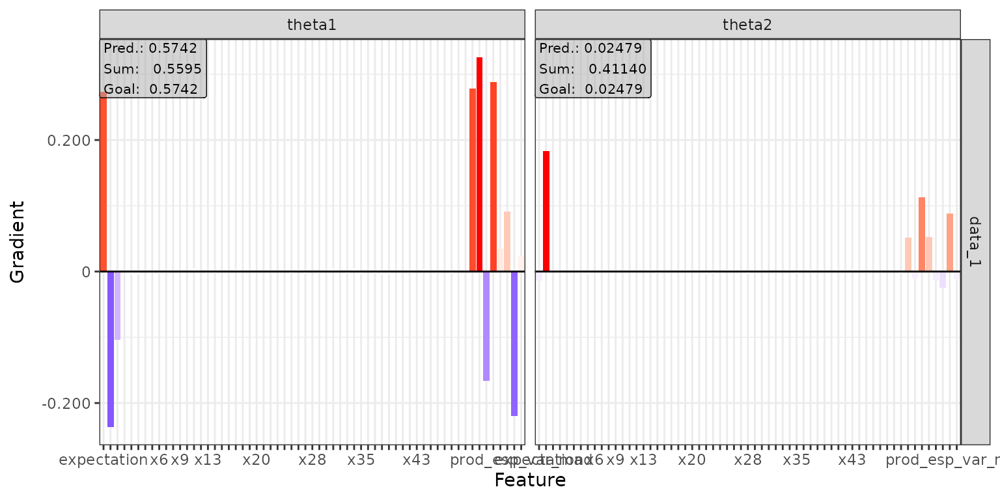
Feature importance visualization using DeepLIFT attribution methods. Colors indicate the contribution of each feature to the final prediction.
exp$plot_global()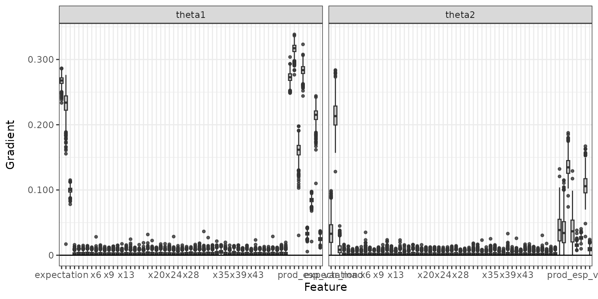
Feature importance visualization using DeepLIFT attribution methods. Colors indicate the contribution of each feature to the final prediction.
The individual contributions of input variables to individual predictions:
exp$get_result()[1:5,1:10,1]
#> expectation variance mad x1 x2
#> [1,] 0.2736825 -0.2361407 -0.10348824 0.0008184963 -0.005054448
#> [2,] 0.2612956 -0.2012542 -0.09363259 -0.0063137538 -0.003924967
#> [3,] 0.2704200 -0.2463815 -0.10075986 -0.0051730182 -0.004306838
#> [4,] 0.2605524 -0.2452051 -0.09112358 0.0055238158 -0.009021315
#> [5,] 0.2594152 -0.2264047 -0.09708515 0.0009386177 -0.002489848
#> x3 x4 x5 x6 x7
#> [1,] -0.0048971558 -0.000363975 -0.0021883326 -0.0024726717 -0.0017994770
#> [2,] 0.0005236256 -0.004372850 -0.0037100802 -0.0025572935 0.0018177561
#> [3,] 0.0022181931 -0.001485463 -0.0036594709 0.0008888189 0.0003675274
#> [4,] 0.0011710153 -0.003444058 -0.0035113934 0.0026196539 0.0001059127
#> [5,] -0.0029001101 -0.001197621 0.0008689022 0.0004568154 0.0016093889ABC Integration with TabNet
TabNet Architecture for Summary Statistics
TabNet-ABC (Arik and Pfister 2020; Åkesson et al. 2022) combines interpretable attention mechanisms with traditional ABC methods. The key innovation is using TabNet to learn informative summary statistics from raw simulation outputs, then applying standard ABC regression on these learned features.
TabNet-ABC Implementation
Tabnet is trained to predict the mean parameter, which is re-used during inference as a new informative summary statistics. We leverage the Tabnet Attention map and feature importance to subset only the most informative summary statistics for the ABC inference step. They are then concatenated to the Tabnet predicted mean.
tabnetabc = abcnn$new(theta.train[1:10000,],
sumstats.train[1:10000,],
sumstats.test[1:1000,],
method = 'tabnet-abc',
scale_input = "none",
scale_target = "none",
epochs = 30,
batch_size = 64,
tol = 0.1,
abc_keep_original_sumstats = 10,
abc_method = "loclinear",
seed = 4567)
tabnetabc$summary()
#> ===================================================
#> ABC Neural Net. Bayesian Deep learning and ABC.
#> ===================================================
#> ABC parameter inference with the method: tabnet-abc
#>
#>
#> |Sample | Size|
#> |:----------------|-----:|
#> |Training | 9e+03|
#> |Testing split | 1e-01|
#> |Testing | 9e+02|
#> |Evaluation split | 1e-01|
#> |Evaluation | 1e+03|
#> |Conformal | 1e+03|
#> |Observed | 1e+03|
#>
#> Is CUDA available? [1] FALSE
#>
#> Device is: torch_device(type='cpu')
#>
#> Call: initialize(theta = ..1, sumstat = ..2, observed = ..3, method = "tabnet-abc",
#> scale_input = "none", scale_target = "none", batch_size = 64,
#> epochs = 30, abc_method = "loclinear", tol = 0.1, abc_keep_original_sumstats = 10,
#> seed = 4567)| Hyperparameter | Value |
|---|---|
| Method | tabnet-abc |
| Scaling for inputs (summary statistics) | none |
| Scaling for targets (theta) | none |
| Number hidden layers | 3 |
| Number hidden dimensions | 128 |
| Batch size | 64 |
| Epochs | 30 |
| Early stopping callback | FALSE |
| Patience for early stopping | 4 |
| Learning rate | 0.001 |
| L2 weight decay | 1e-05 |
| Method for ABC | loclinear |
| Tolerance rate (ABC) | 0.1 |
| Number of posterior samples (mc dropout and concrete dropout) | 1000 |
| Dropout rate | 0.5 |
| Number of networks (deep ensemble) | 5 |
tabnetabc$fit()
tabnetabc$plot_training()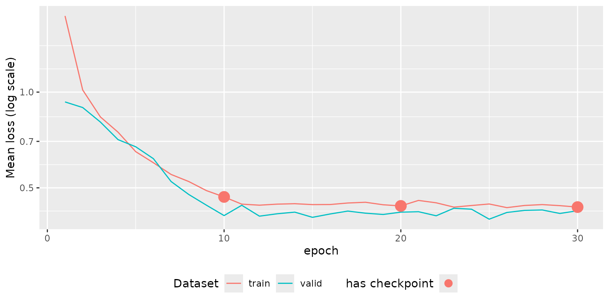
Model performance
tabnetabc$plot_prediction(uncertainty_type = "posterior quantile",
plot_type = "errorbar")
#> Back-transform scaled parameters with method: none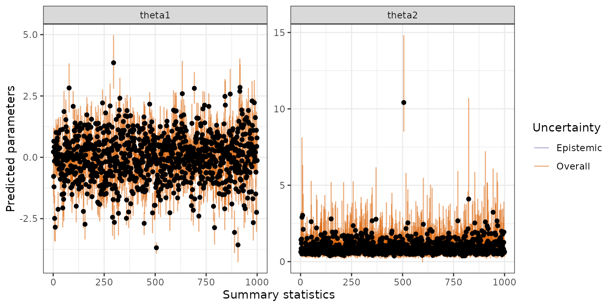
TabNet-ABC performance showing posterior quantile predictions compared to true parameter values.
df = tabnetabc$predictions() %>%
filter(parameter == "theta1")
#> Back-transform scaled parameters with method: none
df$true.theta = theta.exact[1:1000,"mean.theta1"]
ggplot(df, aes(x = true.theta, y = predictive_mean)) +
geom_ribbon(aes(ymin = posterior_lower_ci, ymax = posterior_upper_ci),
fill = "lightgrey", alpha = 0.5) +
geom_point(alpha = 0.6) +
geom_smooth(method = "lm", se = FALSE, color = "red") +
labs(x = "True Posterior Mean", y = "Predicted Mean",
title = "TabNet-ABC Predictive check") +
theme_bw()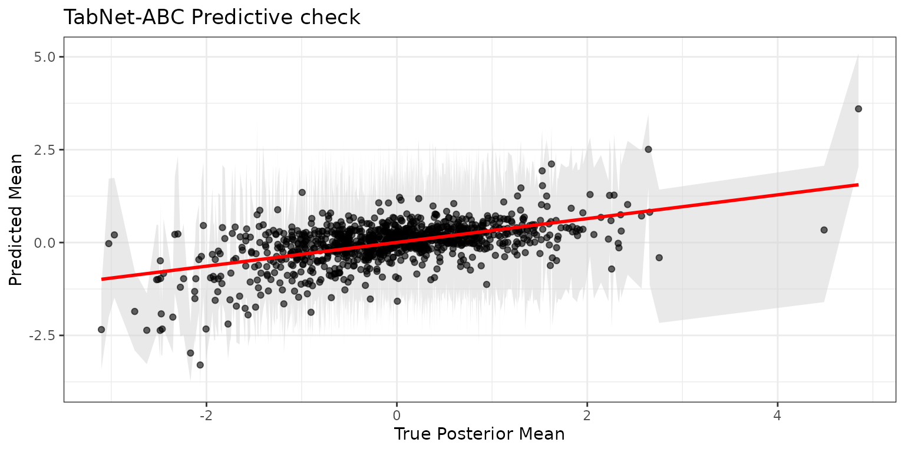
Scatter plot comparing TabNet-ABC predictions to exact posterior means. The shaded region represents 95% credible intervals.
Tabnet attention maps for model explanation
With the method Tabnet-ABC, built-in attention maps and tabnet methods are used instead of innsight methods:
exp = explainn$new(tabnetabc)
#> [1] "Note that Tabnet-ABC has its own set of explainability methods."
exp$run(data = sumstats.test)
exp$plot()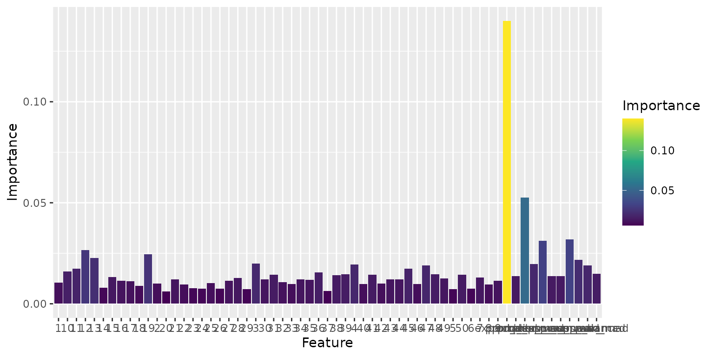
exp$plot(type = "mask_agg")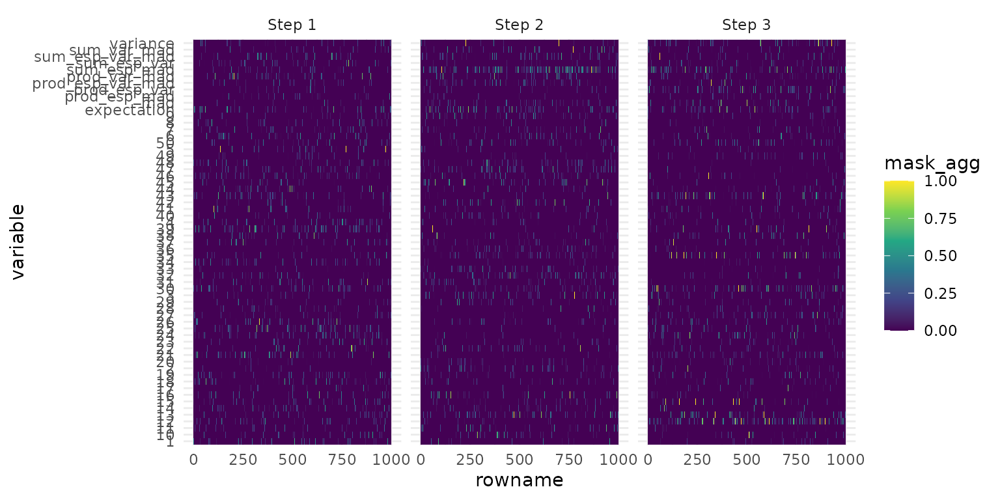
exp$plot(type = "steps")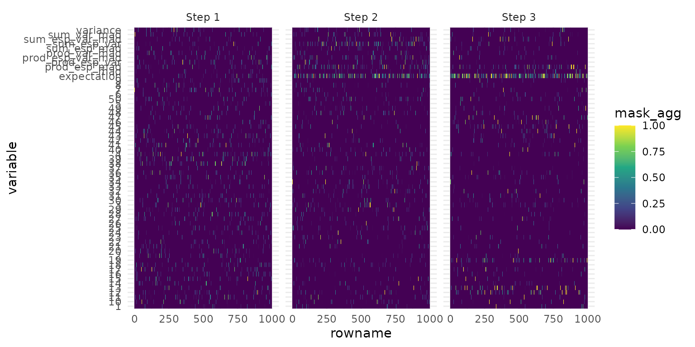
FAQ
1. How does it work?
abcneuralnet proposes a simple straightforward workflow:
Training. Define your data and model architecture with
abcnn$new(). Callabcnn$fit()on your model. All is very user-friendly,torchandluzhandle batching, backpropagation, and optimization automatically, as well as handling the device (cpu or CUDA gpu).Validation. During training,
luzevaluates and print the performance of the model on a separate validation dataset to monitor overfitting and generalization at each epoch. After training, check training and validation loss curves withabcnn$plot_training()to evaluate under/overfitting.Testing. After training, evaluate the trained model on an unseen test set (a subset of the training data). The multi-output predictions of abcneuralnet allow you to evaluate the predictive performance by predicting on a test set (a simulated dataset with known ground truth). Use
abcnn$predict()method to get predictions on both the test set and calculate custom metrics on the test set.Posterior predictive check is an additional important step to evaluate the model’s performance in a Bayesian framework. It is similar to step 3, but instead of testing on a subset of the training data, you must re-generate a simulated dataset where the priors are the posterior estimated by the model. Call
abcnn$predict(posterior_check_data)whereposterior_check_datais your new simulated summary statistics generated by drawing parameters in the posterior. As in step 3, calculate custom metrics on the posterior predictive test set to evaluate the model’s predictive performance.Iteratively improve the model. Adjust hyperparameters or model architecture based on diagnostics, and re-train.
Infer parameters based on observed summary statistics. Call
abcnn$predict(observed_data)whereobserved_datais your observed summary statistics.
At first, I advise to train a smaller/simpler model (around 3-5
hidden layers and between 100 and 500 neurons per layer max), on a
reduced dataset (10,000 - 100,000 samples), to check first how it
behaves with your dataset. A small training set will allow you to
rapidly explore the hyperparameter space. Then, once you have found a
model learning well, you can increase the training dataset and adjust
accordingly the hyperparameters to scale up (usually
batch size and learning rates have to be
adjusted to account for overfitting when the sample size increases, see
Table 1 for details on hyperparameters).
Most importantly, feel free to contact me for any questions and comments on your usage of the package (and raise github issues). I will do my best to document any troubleshooting encountered and to address bugs as fast as possible. Note that this package is under continuous development and improvements.
If you are not familar with Neural Networks, I recommend the book Hands-on machine learning with Scikit-Learn, Keras, and TensorFlow from Aurélien Géron, or this free online book https://skeydan.github.io/Deep-Learning-and-Scientific-Computing-with-R-torch/ as a good introduction to the Torch ecosystem in R. See also the documentation at https://torch.mlverse.org/.
2. Which method should I choose?
Bayesian neural networks possess several specific characteristics that must be considered, as detailed below. For the Concrete Dropout and Deep Ensemble methods, model training can be more challenging than with conventional neural networks, since the model jointly estimates both the mean prediction and its associated variance. However, this variance component is also what makes these two methods particularly valuable in a Bayesian context. They allow the joint estimation of the model’s epistemic uncertainty (uncertainty in the model itself) and the aleatoric uncertainty (uncertainty inherent in the data), effectively enabling the model to “know when it doesn’t know”. These capabilities are powerful features for assessing model performance and overall reliability, and they arguably justify the slightly lower predictive performance often observed compared to standard neural networks.
This behavior also implies that if your training dataset (simulations) lacks informativeness or if the model architecture is poorly suited to the observed data, the neural network will explicitly indicate its inability to learn with a large epistemic uncertainty. In such cases, training will fail, typically evidenced by a loss function that decreases only weakly over epochs or exhibits large stochastic fluctuations between epochs—underscoring the importance of closely monitoring training curves. Even when training appears successful, a misspecified model or uninformative simulations will generally lead to extremely high uncertainty estimates and wide credible intervals.
In contrast, the Monte Carlo Dropout and TabNet-ABC methods do not exhibit this “variance” issue and tend to behave similarly to conventional neural networks. The Monte Carlo Dropout approach is simple, not especially high-performing, and offers limited interpretability — estimating only epistemic uncertainty — but it remains useful for quickly testing hypotheses thanks to its ease of training. The TabNet-ABC method follows a similar principle to that described in Åkesson et al. (2022), with the key distinction that the CNN is replaced by a Transformer neural network, which performs better on tabular data. In this framework, a neural network estimates the mean posterior of the parameters, which are then used as summary statistics for a standard ABC procedure. Thus, the Bayesian component is implemented through the ABC algorithm (e.g., using the abc package), rather than being integrated into the neural network itself.
The TabNet architecture is highly effective for processing tabular data — such as the reference table in ABC — and includes a built-in attention mechanism that provides feature importance scores. Consequently, TabNet-ABC is an excellent alternative if Concrete Dropout and Deep Ensemble prove difficult to apply, or if one seeks to remain closely aligned with a more traditional ABC framework.
Choosing the appropriate method depends on several factors:
| Method | Strengths | Limitations | Computational Cost |
|---|---|---|---|
| Concrete Dropout | Principled uncertainty, Bayesian framework, Almost as efficient as Deep Ensemble for predictive performance and Credible Interval | Training complexity, heteroscedastic loss, Sensitive to statistical outliers and large variance in the training dataset (scaling the data is recommended), Epistemic uncertainty estimates can be noisy/too large when overfitting (prefer the overall uncertainty) | Medium |
| Monte Carlo Dropout | Simple implementation, fast inference | Limited uncertainty quantification (only epistemic), Less efficient than other methods, Larger credible intervals, Requires fine-tuning the dropout rate | Low |
| Deep Ensemble | Robust, adversarial training, The most efficient in predictive performance and Credible Interval, Smoother uncertainty estimates | High memory usage and training time increases with the number of networks, but inference is very fast, does not generate a full posterior (only point estimates of mean and variance) | Medium |
| TabNet-ABC | Interpretability, ABC integration, The Transformer architecture is designed to handle tabular data, built-in Attention map | Two-stage process, Requires an additional ABC procedure to estimate the full posterior, Only epistemic uncertainty | High |
3. Should I transform the input data?
Pre-processing and scaling the input data is crucial to achieve good
performances with neural networks. It is even more true with Bayesian
neural networks (BNN), as large differences in scales within or between
variables can have more dramatic effects on the variance than the mean.
If your model is not learning well or have an unexpected behavior, I
advise you to think about the nature of your data and try to find an
appropriate scaling function. Scaling the data is very easy, as scaling
both the input and target data is directly implemented in the package,
through the scale_input and scale_target
arguments. You can choose the minmax,
robustscaler or normalization scaling methods,
or just none if you don’t want scaling. Usually
minmax and robustscaler perform well. For the
scaling, the scale function learns its parameters on the training set
only to avoid data leakage. If you choose to scale the target too (for
example if your target is a mix of rates and continuous values), the
predictions are transformed back to the original scale.
4. How do I evaluate the training performance of my model?
To evaluate the training of your model (how well it learned), the best approach is simply to look at the learning curves. I will not detail how to interpret these curves, there is a lot of literature about it and it is the same for every neural network. See for example this post. The package offers all the necessary information to evaluate the learning curve, with losses estimated on three independent training, validation and evaluation sets.
5. Which type of uncertainty must I consider?
Once your model has passed the learning-curve diagnostic, you can move on to deeper validation by examining and comparing the epistemic and aleatoric uncertainties. These raw uncertainty components provide particularly useful insight into model behavior across samples, allowing you to identify regions where predictions are accurate and confident (low epistemic uncertainty) and regions where the model effectively “does not know”, making predictions unreliable. In general, epistemic uncertainty is high in areas with few data points or outside the training distribution. This analysis also helps determine whether performance is mainly limited by the model (epistemic) or by the data (aleatoric), noting that epistemic uncertainty can often be reduced with more or better data, whereas aleatoric uncertainty reflects irreducible noise in the data. Typically, epistemic uncertainty should be noticeably lower than aleatoric uncertainty; if epistemic uncertainty is similar to or higher than aleatoric uncertainty, it indicates that the model has not learned the data-generating structure effectively.
For publications or reporting, conformal credible intervals are generally more appropriate than raw uncertainty values, because they are calibrated to achieve a specified coverage level (by default, a 95% interval). The interpretation of the Conformal Credible Intervals is similar to that of Bayesian credible intervals, while additionally offering formal coverage guarantees under suitable assumptions.
7. How do I tune the hyperparameters of the model?
Stick to simple, widely-used standard values. Train simpler models for test purpose, before running larger models in production. Beware than larger models can sometimes require adjustments for the learning hyperparameters when scaling up (learning rate, batch size), as larger sample sizes also have effects on overfitting and on the variance that is estimated by the model. A larger sample size affects the epistemic uncertainty, the uncertainty of the model, while the aleatoric uncertainty, the uncertainty of the data itself, should not be much affected.
The number of hidden layers and hidden dimensions (number of neurons) are important to efficiently capture complex non-linear relationships between input and output features, but with Bayesian Neural Network it is not necessary to use a large number of neurons and layers. Generally 3-6 layers with 100-500 neurons each is sufficient. Yet the most critical hyperparameters are those related to the training procedure, such as the learning rate and the batch size. The L2 weight decay only has a minimum impact, and the default value should be fine, except if you observe a strong overfitting.
| Hyperparameter | Values |
|---|---|
| Number of hidden dimensions (i.e. neurons) in one layer | 100-500 is generally a good range. You can try higher values if you have more than 200 summary statistics. |
| Number of hidden layers | 3-6, deeper networks tend to be harder to train |
| Epochs | 30-60 are generally enough to avoid overfitting |
| Batch size | 32-256, depending mostly on the variance in your training set. Higher batch sizes have a smoothing effect on excess of variance during training. |
| Learning rate | 1e-3 is generally fine for 10,000-100,000 training samples. 1e-4 tend to be better for sample sizes >= 1,000,000. |
| L2 weight decay | 1e-5, minimal impact. |
| Dropout (only for Monte Carlo Dropout) | 0.1-0.5. Smaller values should produce smaller Credible Intervals, but at the risk of less precise or biased estimates. Higher values are more conservative. |
References
Session Information
sessionInfo()
#> R version 4.6.1 (2026-06-24)
#> Platform: x86_64-pc-linux-gnu
#> Running under: Ubuntu 24.04.4 LTS
#>
#> Matrix products: default
#> BLAS: /usr/lib/x86_64-linux-gnu/openblas-pthread/libblas.so.3
#> LAPACK: /usr/lib/x86_64-linux-gnu/openblas-pthread/libopenblasp-r0.3.26.so; LAPACK version 3.12.0
#>
#> locale:
#> [1] LC_CTYPE=C.UTF-8 LC_NUMERIC=C LC_TIME=C.UTF-8
#> [4] LC_COLLATE=C.UTF-8 LC_MONETARY=C.UTF-8 LC_MESSAGES=C.UTF-8
#> [7] LC_PAPER=C.UTF-8 LC_NAME=C LC_ADDRESS=C
#> [10] LC_TELEPHONE=C LC_MEASUREMENT=C.UTF-8 LC_IDENTIFICATION=C
#>
#> time zone: UTC
#> tzcode source: system (glibc)
#>
#> attached base packages:
#> [1] stats graphics grDevices utils datasets methods base
#>
#> other attached packages:
#> [1] kableExtra_1.4.1 lubridate_1.9.5 forcats_1.0.1 stringr_1.6.0
#> [5] dplyr_1.2.1 purrr_1.2.2 readr_2.2.0 tidyr_1.3.2
#> [9] tibble_3.3.1 tidyverse_2.0.0 torch_0.17.0 ggplot2_4.0.3
#> [13] abcneuralnet_0.2
#>
#> loaded via a namespace (and not attached):
#> [1] splines_4.6.1 rminer_1.5.0 hardhat_1.4.3
#> [4] janitor_2.2.1 abc.data_1.1 pROC_1.19.0.1
#> [7] rpart_4.1.27 tabnet_0.9.0 lifecycle_1.0.5
#> [10] rstatix_1.0.0 Rdpack_2.6.6 bundle_0.1.3
#> [13] doParallel_1.0.17 globals_0.19.1 processx_3.9.0
#> [16] lattice_0.22-9 MASS_7.3-65 backports_1.5.1
#> [19] magrittr_2.0.5 sass_0.4.10 rmarkdown_2.31
#> [22] jquerylib_0.1.4 yaml_2.3.12 plotrix_3.8-14
#> [25] rlist_0.4.6.2 otel_0.2.0 luz_0.5.2
#> [28] ConsRank_3.0 cowplot_1.2.0 RColorBrewer_1.1-3
#> [31] abind_1.4-8 multcomp_1.4-31 coro_1.1.0
#> [34] nnet_7.3-20 TH.data_1.1-5 sandwich_3.1-2
#> [37] ipred_0.9-15 lava_1.9.2 listenv_1.0.0
#> [40] adabag_5.1 MatrixModels_0.5-4 parallelly_1.48.0
#> [43] pkgdown_2.2.1 svglite_2.2.2 codetools_0.2-20
#> [46] coin_1.4-5 xml2_1.6.0 shape_1.4.6.1
#> [49] tidyselect_1.2.1 farver_2.1.2 matrixStats_1.5.0
#> [52] stats4_4.6.1 jsonlite_2.0.0 caret_7.0-1
#> [55] e1071_1.7-17 Formula_1.2-5 survival_3.8-6
#> [58] iterators_1.0.14 systemfonts_1.3.2 foreach_1.5.2
#> [61] tools_4.6.1 progress_1.2.3 ragg_1.5.2
#> [64] Rcpp_1.1.2 glue_1.8.1 prodlim_2026.03.11
#> [67] mgcv_1.9-4 xfun_0.60 safetensors_0.2.1
#> [70] withr_3.0.3 fastmap_1.2.0 SparseM_1.84-2
#> [73] callr_3.8.0 digest_0.6.39 timechange_0.4.0
#> [76] R6_2.6.1 textshaping_1.0.5 gtools_3.9.5
#> [79] utf8_1.2.6 generics_0.1.4 pls_2.9-0
#> [82] data.table_1.18.4 recipes_1.3.3 class_7.3-23
#> [85] prettyunits_1.2.0 htmlwidgets_1.6.4 innsight_0.3.2
#> [88] ModelMetrics_1.2.2.2 pkgconfig_2.0.3 strucchange_1.5-4
#> [91] gtable_0.3.6 parsnip_1.6.0 timeDate_4052.112
#> [94] dials_1.4.4 modeltools_0.2-24 party_1.3-21
#> [97] abc_2.2.2 S7_0.2.2 workflows_1.3.0
#> [100] furrr_0.4.0 htmltools_0.5.9 carData_3.0-6
#> [103] scales_1.4.0 gower_1.0.2 snakecase_0.11.1
#> [106] knitr_1.51 rstudioapi_0.19.0 tzdb_0.5.0
#> [109] reshape2_1.4.5 checkmate_2.3.4 nlme_3.1-169
#> [112] proxy_0.4-29 cachem_1.1.0 zoo_1.8-15
#> [115] rsample_1.3.2 parallel_4.6.1 libcoin_1.0-13
#> [118] desc_1.4.3 pillar_1.11.1 grid_4.6.1
#> [121] vctrs_0.7.3 tune_2.1.0 ggpubr_1.0.0
#> [124] randomForest_4.7-1.2 car_3.1-5 yardstick_1.4.0
#> [127] evaluate_1.0.5 Cubist_0.6.0 zeallot_0.2.0
#> [130] mvtnorm_1.4-2 cli_3.6.6 locfit_1.5-9.12
#> [133] compiler_4.6.1 rlang_1.3.0 crayon_1.5.3
#> [136] ggsignif_0.6.4 future.apply_1.20.2 labeling_0.4.3
#> [139] ps_1.9.3 plyr_1.8.9 fs_2.1.0
#> [142] mda_0.5-5 stringi_1.8.7 viridisLite_0.4.3
#> [145] glmnet_5.0 quantreg_6.1 Matrix_1.7-5
#> [148] hms_1.1.4 bit64_4.8.2 future_1.75.0
#> [151] kknn_1.4.1 kernlab_0.9-33 rbibutils_2.4.1
#> [154] broom_1.0.13 igraph_2.3.3 bslib_0.11.0
#> [157] xgboost_3.2.1.1 bit_4.6.0 DiceDesign_1.10